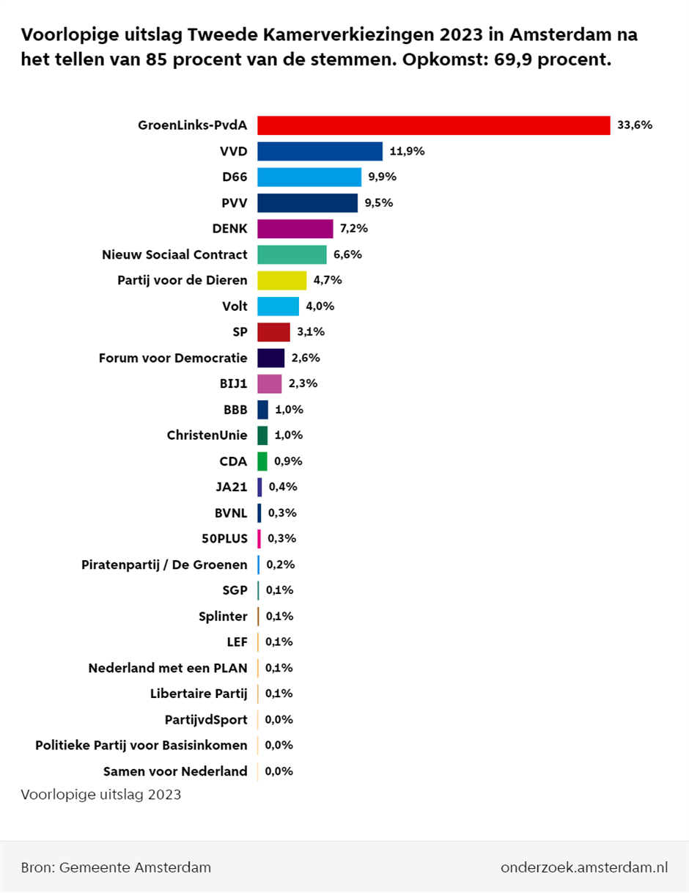

23 november 2023 0:40
Voorlopige uitslag
GroenLinks-PvdA is in Amsterdam de winnaar van de Tweede Kamerverkiezingen, met meer dan 33 procent van de stemmen. De VVD verliest iets ten opzichte van de vorige Kamerverkiezingen en is met 11,9 procent de tweede partij. Dat blijkt na het tellen van 85 procent van de stemmen.
Kijk voor meer informatie op Voorlopige uitslag Tweede Kamerverkiezingen 2023.
22 november 2023 21:24
Opkomstcijfers 21.00 uur
We hebben de opkomstcijfers. Rond 21.00 uur heeft 69,9 procent van de kiesgerechtigden gestemd. In 2021 was dit 75,7 procent.
22 november 2023 18:00
Opkomstcijfers 18.00 uur
We hebben weer opkomstcijfers. Rond 18.00 uur heeft 53 procent van de kiesgerechtigden gestemd. U kunt nog stemmen tot 21.00 uur vanavond.
22 november 2023 12:55
Eerste opkomstcijfers
We hebben de eerste opkomstcijfers van de Tweede Kamerverkiezingen. Rond 13.00 uur heeft 23,3 procent van de kiesgerechtigden gestemd. U kunt nog stemmen tot 21.00 uur vanavond.
22 november 2023 7:30
De stembureaus zijn open
U kunt vandaag stemmen bij 1 van de bijna 500 stembureaus in Amsterdam en Weesp. De stembureaus zijn open van 7.30 tot 21.00 uur. U mag zelf kiezen bij welk stembureau u gaat stemmen.
Er zijn 2 stembureaus afgevallen. Hiervoor zijn 2 andere stembureaus in de plaats gekomen.
- Stembureau Zuiderkerk (Centrum) is gesloten. U kunt terecht in Huis de Pinto, Sint Antoniesbreestraat 69.
- Stembureau Pestana Amsterdam Riverside Hotel (Zuid) is gesloten. U kunt terecht in OBA CC Amstel, Cullinanplein 1.
Kijk voor de volledige lijst met stemlocaties op Stembureaus in Amsterdam. Hier staan ook de stembureaus die speciale voorzieningen hebben voor mensen met een beperking.